Favoris follower like
Les fonctionnalités Favoris / Follower / Like permettent aux utilisateurs de sauvegarder ou d’aimer un contenu spécifique.
Elle joue un rôle clé dans l'amélioration de l'expérience utilisateur en permettant une interaction personnalisée et en facilitant l'accès rapide à des éléments importants.
Les fonctionnalités Favoris, Followers et Like dans Zyllio présentent des similitudes. Ce document utilise les Favoris comme exemple principal, mais les principes décrits ci-dessous sont également applicables aux autres fonctionnalités.
Configuration de la base de données
Pour stocker la fonctionnalité de Favoris, vous devez utiliser une table prédéfinie appelée Favorites.
Depuis l'onglet Database, déplacer une table Favorites dans l’espace de travail.
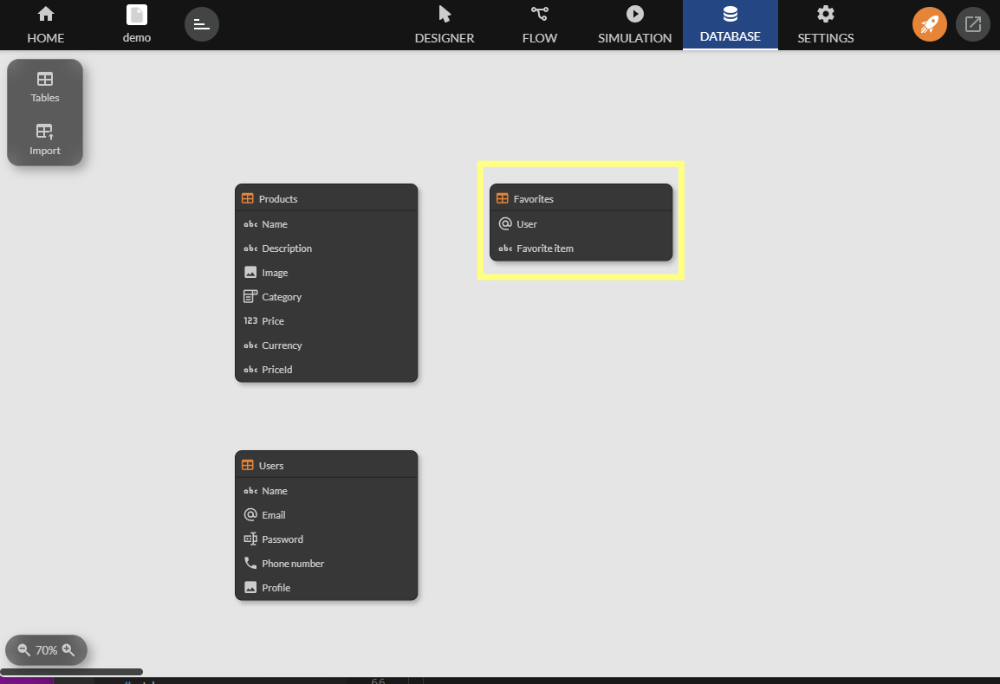
La table doit contenir au moins les colonnes suivantes :
- User : Cette colonne stocke l'adresse e-mail de l'utilisateur qui ajoute un favori. Par défaut, elle est souvent liée à User/Email.
- Favorite Item : Cette colonne représente l'objet ou l'élément qui est marqué comme favori. Par exemple : Products/Id pour un produit. Cette colonne doit référencer un item de manière unique.
Exemple de structure de la table Favorites :
| User | Favorite Item |
|---|---|
| user1@email.com | Produit 45887 |
| user2@email.com | Produit 11341 |
Mettre en place une authentification
L'authentification permet d’identifier chaque utilisateur afin de stocker ses Favoris dans un espace de données distinct et organisée (par exemple, via son email). Les Favoris doivent être associés à un utilisateur particulier pour garantir qu'ils ne sont accessibles qu'à celui-ci.
Créer une table d’utilisateurs
Dans l’onglet Database, glisser une tables Users comme suit :

Notez que cette table Users fournit 2 utilisateurs d’exemple utiles pendant la phase de conception de votre application.
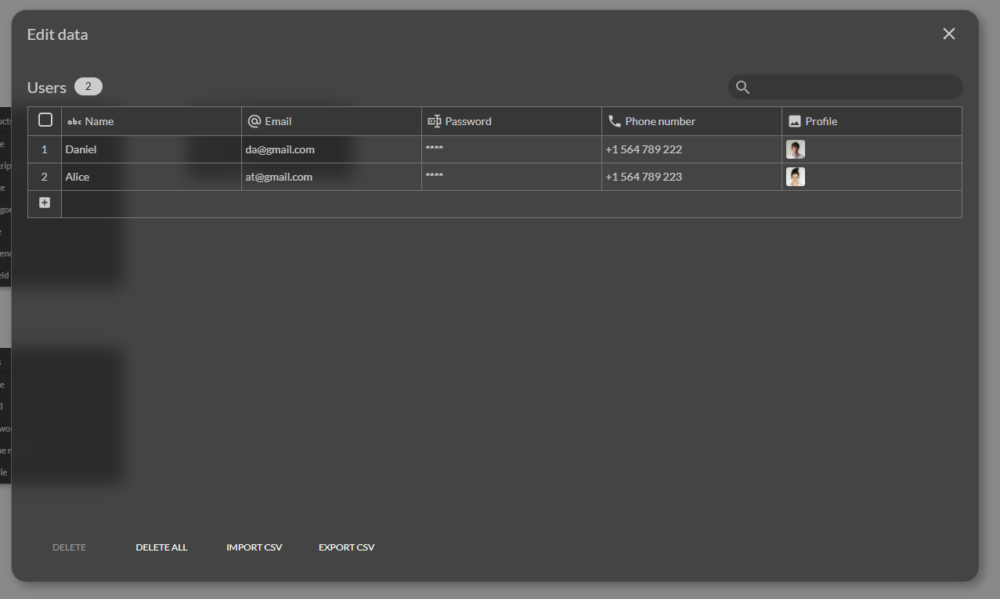
Créer un écran d’authentification
Sélectionnez le modèle d’écran Login et glissez le dans l’espace de travail comme suit :
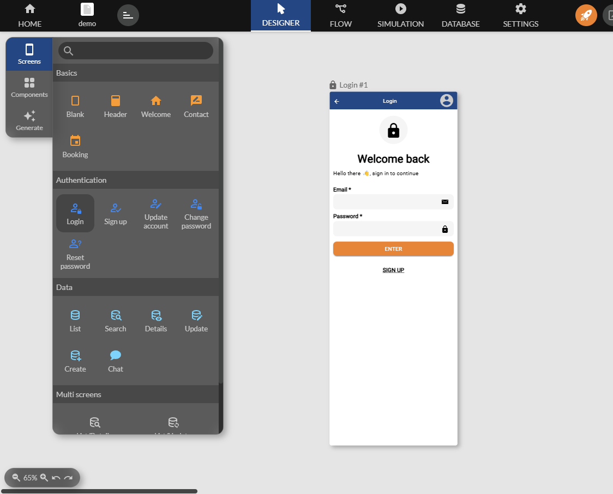
Ajouter un composant d’items
Les items sont des informations à mettre en favoris. Ici nous utilisons un catalogue de fruits et légumes.
Depuis l’onglet Database, glisser une table Products comme suit :
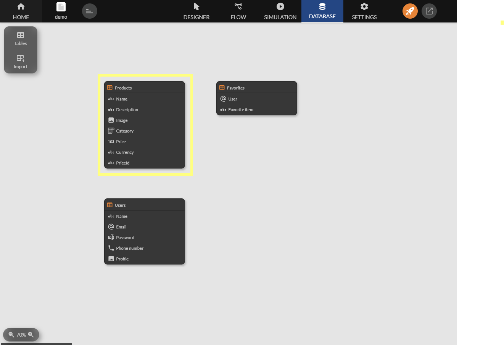
Notez que cette table Products fournit 7 produits d’exemple utiles pendant la phase de conception de votre application.
Afficher des items à mettre en Favoris
Utilisez le composant Grid par exemple pour afficher les produits dans un nouvel écran et reliez le à l’écran d’authentification.

Ajoutez un écran de détail comme suit.

Ajouter le composant Favoris
Sélectionnez le composant Favorite, puis la table Favorites et glissez le composant dans l’écran de détail comme suit :
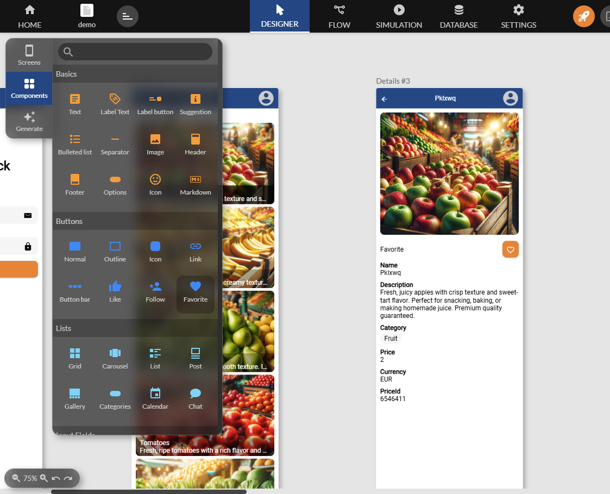
Paramétrage du composant Favorites
Le composant nécessite un paramétrage pour indiquer l’utilisateur propriétaire du Favoris ainsi que l’item à mettre en Favoris.
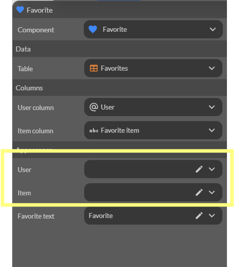
Composant Favoris
| Parametre | Description | Exemple |
|---|---|---|
| User | Utilisateur proprietaire du favoris | Souvent l'utilisateur authentifie User/Email |
| Item | Item a mettre en favoris | Un item selectionne par l'utilisateur Products/Name |
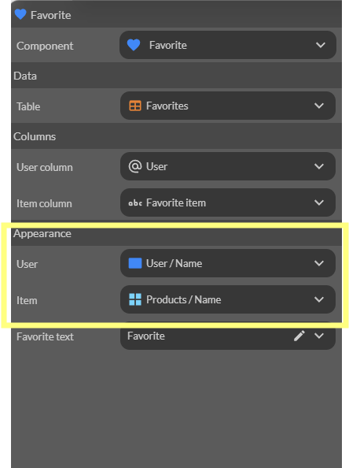
Tester la mise en Favoris
Lancez la simulation et testez en sélectionnant l’un des utilisateurs.
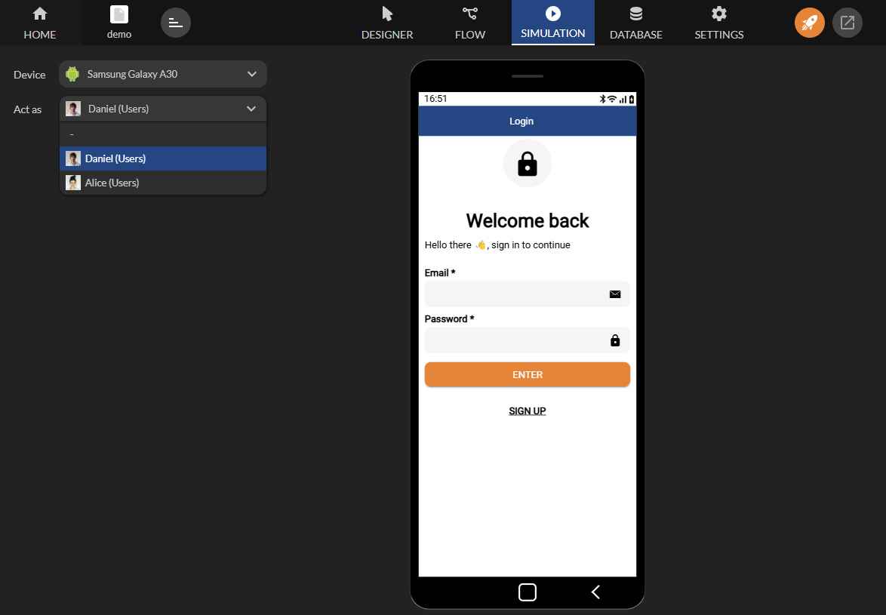
Finalement, cliquez sur mettre en Favoris.
Notez que le composant met et retire le Favoris automatiquement.
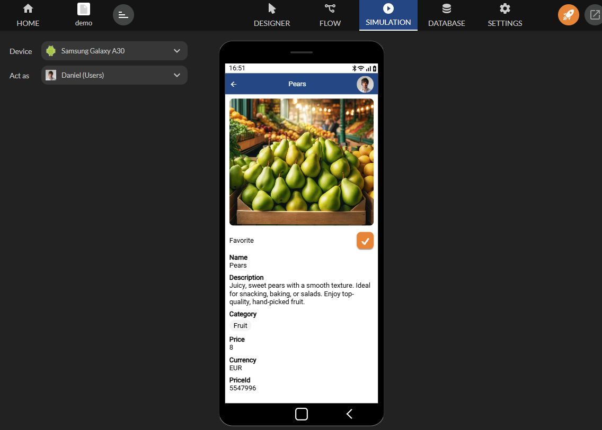
Mettre en favoris sans authentification
Il est possible de mettre en favoris sans authentifier l’utilisateur. Pour cela, dans les paramètres du composant Favorites, utilisez l’identifiant du terminal via la formule Terminal / Identifiant.
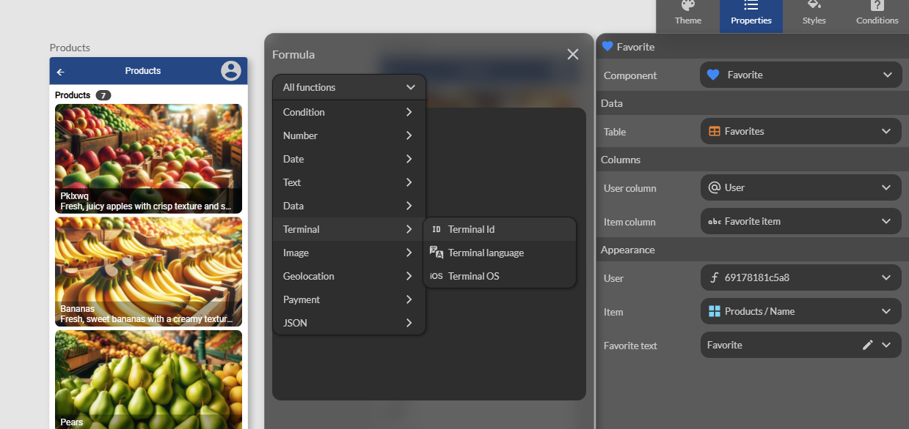
Vous obtenez :
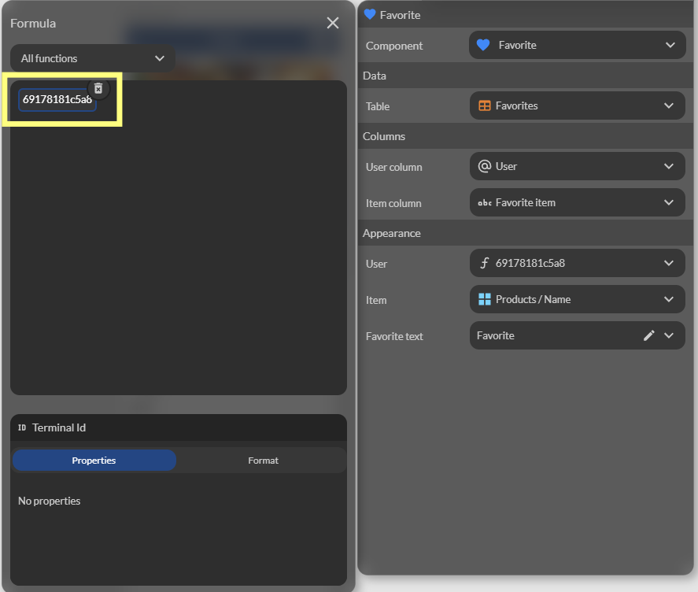
Ne pas authentifier l’utilisateur implique que les favoris ne s’afficheront que sur le terminal où les favoris ont été sélectionnés.